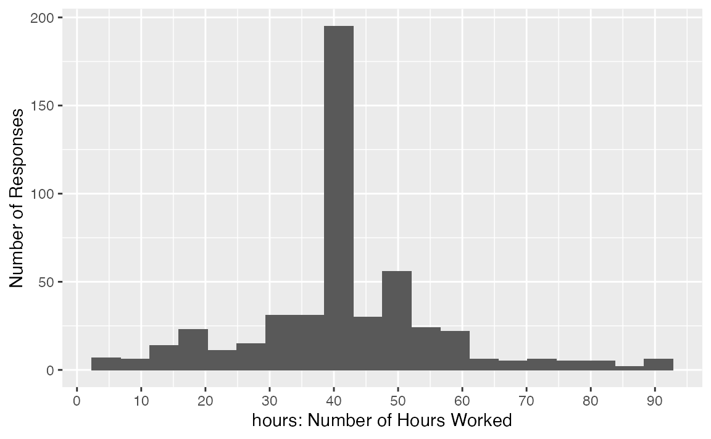
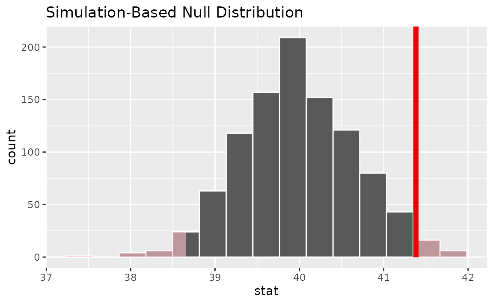
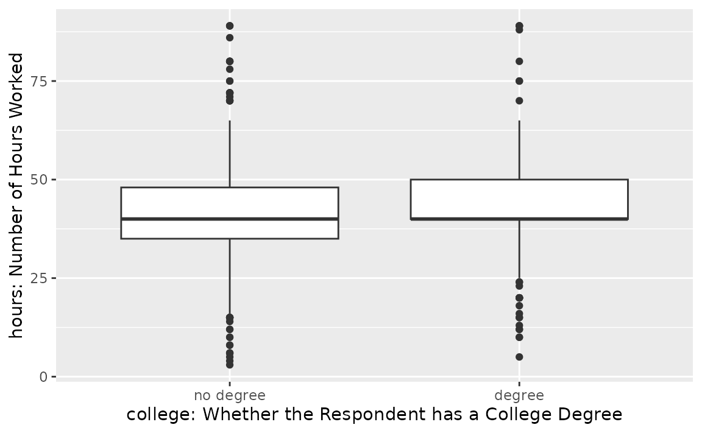
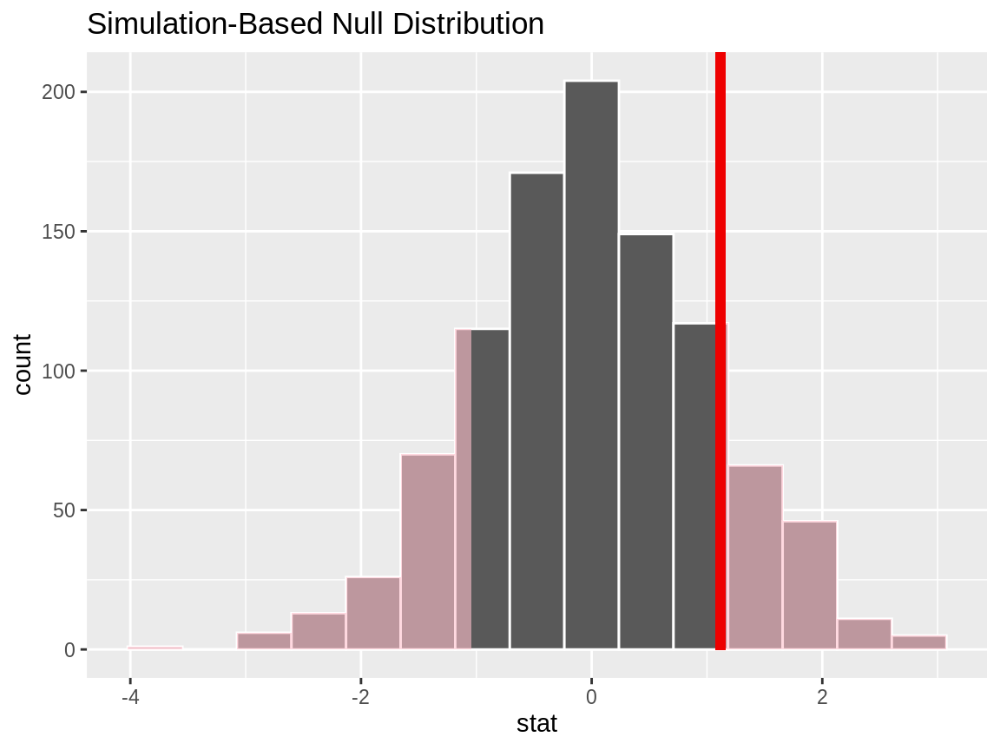

In this vignette, we’ll walk through conducting \(t\)-tests and their randomization-based analogue using infer. We’ll start out with a 1-sample \(t\)-test, which compares a sample mean to a hypothesized true mean value. Then, we’ll discuss paired \(t\)-tests, which are a special use case of 1-sample \(t\)-tests, and evaluate whether differences in paired values (e.g. some measure taken of a person before and after an experiment) differ from 0. Finally, we’ll wrap up with 2-sample \(t\)-tests, testing the difference in means of two populations using a sample of data drawn from them.
Throughout this vignette, we’ll make use of the gss dataset supplied by infer, which contains a sample of data from the General Social Survey. See ?gss for more information on the variables included and their source. Note that this data (and our examples on it) are for demonstration purposes only, and will not necessarily provide accurate estimates unless weighted properly. For these examples, let’s suppose that this dataset is a representative sample of a population we want to learn about: American adults. The data looks like this:
dplyr::glimpse(gss)## Rows: 500
## Columns: 11
## $ year <dbl> 2014, 1994, 1998, 1996, 1994, 1996, 1990, 2016, 2000, 1998, 20…
## $ age <dbl> 36, 34, 24, 42, 31, 32, 48, 36, 30, 33, 21, 30, 38, 49, 25, 56…
## $ sex <fct> male, female, male, male, male, female, female, female, female…
## $ college <fct> degree, no degree, degree, no degree, degree, no degree, no de…
## $ partyid <fct> ind, rep, ind, ind, rep, rep, dem, ind, rep, dem, dem, ind, de…
## $ hompop <dbl> 3, 4, 1, 4, 2, 4, 2, 1, 5, 2, 4, 3, 4, 4, 2, 2, 3, 2, 1, 2, 5,…
## $ hours <dbl> 50, 31, 40, 40, 40, 53, 32, 20, 40, 40, 23, 52, 38, 72, 48, 40…
## $ income <ord> $25000 or more, $20000 - 24999, $25000 or more, $25000 or more…
## $ class <fct> middle class, working class, working class, working class, mid…
## $ finrela <fct> below average, below average, below average, above average, ab…
## $ weight <dbl> 0.8960, 1.0825, 0.5501, 1.0864, 1.0825, 1.0864, 1.0627, 0.4785…The 1-sample \(t\)-test can be used to test whether a sample of continuous data could have plausibly come from a population with a specified mean.
As an example, we’ll test whether the average American adult works 40 hours a week using data from the gss. To do so, we make use of the hours variable, giving the number of hours that respondents reported having worked in the previous week. The distribution of hours in the observed data looks like this:

It looks like most respondents reported having worked 40 hours, but there’s quite a bit of variability. Let’s test whether we have evidence that the true mean number of hours that Americans work per week is 40.
infer’s randomization-based analogue to the 1-sample \(t\)-test is a 1-sample mean test. We’ll start off showcasing that test before demonstrating how to carry out a theory-based \(t\)-test with the package.
First, to calculate the observed statistic, we can use specify() and calculate().
# calculate the observed statistic
observed_statistic <- gss %>%
specify(response = hours) %>%
calculate(stat = "mean")The observed statistic is 41.382. Now, we want to compare this statistic to a null distribution, generated under the assumption that the mean was actually 40, to get a sense of how likely it would be for us to see this observed mean if the true number of hours worked per week in the population was really 40.
We can generate the null distribution using the bootstrap. In the bootstrap, for each replicate, a sample of size equal to the input sample size is drawn (with replacement) from the input sample data. This allows us to get a sense of how much variability we’d expect to see in the entire population so that we can then understand how unlikely our sample mean would be.
# generate the null distribution
null_dist_1_sample <- gss %>%
specify(response = hours) %>%
hypothesize(null = "point", mu = 40) %>%
generate(reps = 1000, type = "bootstrap") %>%
calculate(stat = "mean")To get a sense for what these distributions look like, and where our observed statistic falls, we can use visualize():
# visualize the null distribution and test statistic!
null_dist_1_sample %>%
visualize() +
shade_p_value(observed_statistic,
direction = "two-sided")
It looks like our observed mean of 41.382 would be relatively unlikely if the true mean was actually 40 hours a week. More exactly, we can calculate the p-value:
# calculate the p value from the test statistic and null distribution
p_value_1_sample <- null_dist_1_sample %>%
get_p_value(obs_stat = observed_statistic,
direction = "two-sided")
p_value_1_sample## # A tibble: 1 × 1
## p_value
## <dbl>
## 1 0.026Thus, if the true mean number of hours worked per week was really 40, our approximation of the probability that we would see a test statistic as or more extreme than 41.382 is approximately 0.026.
Analogously to the steps shown above, the package supplies a wrapper function, t_test, to carry out 1-sample \(t\)-tests on tidy data. Rather than using randomization, the wrappers carry out the theory-based \(t\)-test. The syntax looks like this:
t_test(gss, response = hours, mu = 40)## # A tibble: 1 × 7
## statistic t_df p_value alternative estimate lower_ci upper_ci
## <dbl> <dbl> <dbl> <chr> <dbl> <dbl> <dbl>
## 1 2.09 499 0.0376 two.sided 41.4 40.1 42.7An alternative approach to the t_test() wrapper is to calculate the observed statistic with an infer pipeline and then supply it to the pt function from base R.
# calculate the observed statistic
observed_statistic <- gss %>%
specify(response = hours) %>%
hypothesize(null = "point", mu = 40) %>%
calculate(stat = "t") %>%
dplyr::pull()Note that this pipeline to calculate an observed statistic includes a call to hypothesize() since the \(t\) statistic requires a hypothesized mean value.
Then, juxtaposing that \(t\) statistic with its associated distribution using the pt function:
## t
## 0.03756Note that the resulting \(t\)-statistics from these two theory-based approaches are the same.
You might be interested in running a paired \(t\)-test. Paired \(t\)-tests can be used in situations when there is a natural pairing between values in distributions—a common example would be two columns, before and after, say, that contain measurements from a patient before and after some treatment. To compare these two distributions, then, we’re not necessarily interested in how the two distributions look different altogether, but how these two measurements from each individual change across time. (Pairings don’t necessarily have to be over time; another common usage is measurements from two married people, for example.) Thus, we can create a new column (see mutate() from the dplyr package if you’re not sure how to do this) that is the difference between the two: difference = after - before, and then examine this distribution to see how each individuals’ measurements changed over time.
Once we’ve mutate()d that new difference column, we can run a 1-sample \(t\)-test on it, where our null hypothesis is that mu = 0 (i.e. the difference between these measurements before and after treatment is, on average, 0). To do so, we’d use the procedure outlined in the above section.
2-Sample \(t\)-tests evaluate the difference in mean values of two populations using data randomly-sampled from the population that approximately follows a normal distribution. As an example, we’ll test if Americans work the same number of hours a week regardless of whether they have a college degree or not using data from the gss. The college and hours variables allow us to do so:

It looks like both of these distributions are centered near 40 hours a week, but the distribution for those with a degree is slightly right skewed.
Again, note the warning about missing values—many respondents’ values are missing. If we were actually carrying out this hypothesis test, we might look further into how this data was collected; it’s possible that whether or not a value in either of these columns is missing is related to what that value would be.
infer’s randomization-based analogue to the 2-sample \(t\)-test is a difference in means test. We’ll start off showcasing that test before demonstrating how to carry out a theory-based \(t\)-test with the package.
As with the one-sample test, to calculate the observed difference in means, we can use specify() and calculate().
# calculate the observed statistic
observed_statistic <- gss %>%
specify(hours ~ college) %>%
calculate(stat = "diff in means", order = c("degree", "no degree"))
observed_statistic## Response: hours (numeric)
## Explanatory: college (factor)
## # A tibble: 1 × 1
## stat
## <dbl>
## 1 1.54Note that, in the line specify(hours ~ college), we could have swapped this out with the syntax specify(response = hours, explanatory = college)!
The order argument in that calculate line gives the order to subtract the mean values in: in our case, we’re taking the mean number of hours worked by those with a degree minus the mean number of hours worked by those without a degree; a positive difference, then, would mean that people with degrees worked more than those without a degree.
Now, we want to compare this difference in means to a null distribution, generated under the assumption that the number of hours worked a week has no relationship with whether or not one has a college degree, to get a sense of how likely it would be for us to see this observed difference in means if there were really no relationship between these two variables.
We can generate the null distribution using permutation, where, for each replicate, each value of degree status will be randomly reassigned (without replacement) to a new number of hours worked per week in the sample in order to break any association between the two.
# generate the null distribution with randomization
null_dist_2_sample <- gss %>%
specify(hours ~ college) %>%
hypothesize(null = "independence") %>%
generate(reps = 1000, type = "permute") %>%
calculate(stat = "diff in means", order = c("degree", "no degree"))Again, note that, in the lines specify(hours ~ college) in the above chunk, we could have used the syntax specify(response = hours, explanatory = college) instead!
To get a sense for what these distributions look like, and where our observed statistic falls, we can use visualize().
# visualize the randomization-based null distribution and test statistic!
null_dist_2_sample %>%
visualize() +
shade_p_value(observed_statistic,
direction = "two-sided")
It looks like our observed statistic of 1.5384 would be unlikely if there was truly no relationship between degree status and number of hours worked. More exactly, we can calculate the p-value; theoretical p-values are not yet supported, so we’ll use the randomization-based null distribution to do calculate the p-value.
# calculate the p value from the randomization-based null
# distribution and the observed statistic
p_value_2_sample <- null_dist_2_sample %>%
get_p_value(obs_stat = observed_statistic,
direction = "two-sided")
p_value_2_sample## # A tibble: 1 × 1
## p_value
## <dbl>
## 1 0.3Thus, if there were really no relationship between the number of hours worked a week and whether one has a college degree, the probability that we would see a statistic as or more extreme than 1.5384 is approximately 0.3.
Note that, similarly to the steps shown above, the package supplies a wrapper function, t_test, to carry out 2-sample \(t\)-tests on tidy data. The syntax looks like this:
t_test(x = gss,
formula = hours ~ college,
order = c("degree", "no degree"),
alternative = "two-sided")## # A tibble: 1 × 7
## statistic t_df p_value alternative estimate lower_ci upper_ci
## <dbl> <dbl> <dbl> <chr> <dbl> <dbl> <dbl>
## 1 1.12 366. 0.264 two.sided 1.54 -1.16 4.24In the above example, we specified the relationship with the syntax formula = hours ~ college; we could have also written response = hours, explanatory = college.
An alternative approach to the t_test() wrapper is to calculate the observed statistic with an infer pipeline and then supply it to the pt function from base R. We can calculate the statistic as before, switching out the stat = "diff in means" argument with stat = "t".
# calculate the observed statistic
observed_statistic <- gss %>%
specify(hours ~ college) %>%
hypothesize(null = "point", mu = 40) %>%
calculate(stat = "t", order = c("degree", "no degree")) %>%
dplyr::pull()
observed_statistic## t
## 1.119Note that this pipeline to calculate an observed statistic includes hypothesize() since the \(t\) statistic requires a hypothesized mean value.
Then, juxtaposing that \(t\) statistic with its associated distribution using the pt function:
## t
## 0.2635Note that the results from these two theory-based approaches are nearly the same.